CATÁLOGO COMPLETO
Liderando la Evolución Digital: Precisión Infinita, Soluciones Completas.
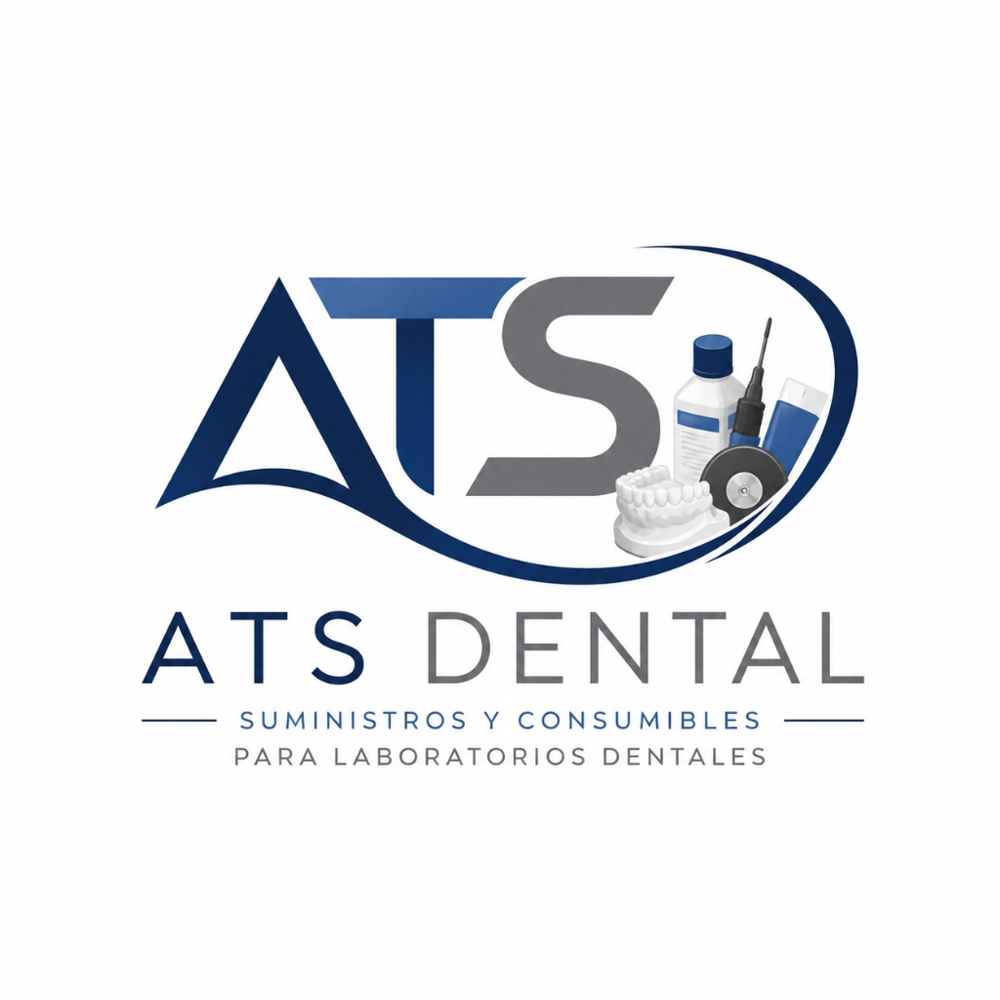
Liderando la Evolución Digital: Precisión Infinita, Soluciones Completas.
Diseño dental de clase mundial con exocad.
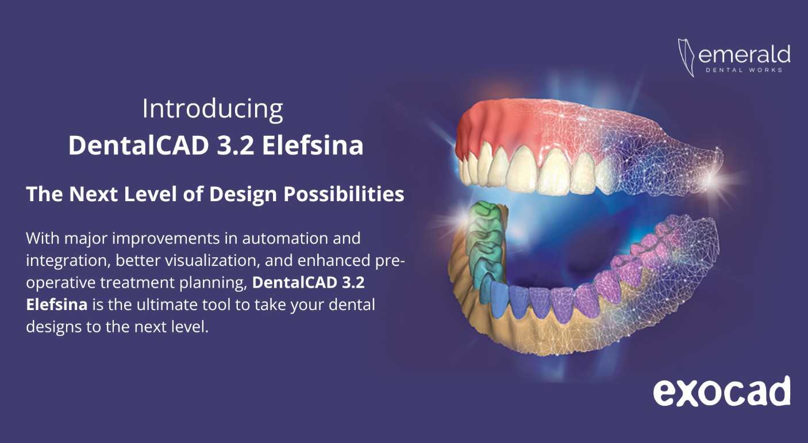
El estándar global en diseño CAD dental. Encerado digital, articulador virtual, puentes de hasta 16 unidades, y compatibilidad abierta con más de 300 escáneres y fresadoras.
Solicitar Cotización →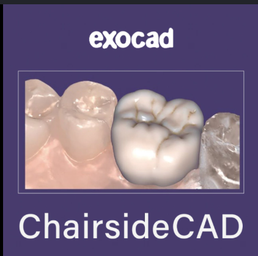
Diseña y produce restauraciones definitivas chairside. Integración directa con Medit, CEREC y otros escáneres intraorales para flujos de trabajo ultrarrápidos en clínica.
Solicitar Cotización →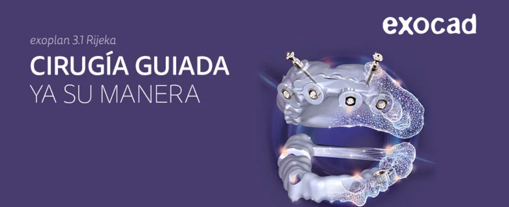
Planificación implantológica 3D con fusión CBCT+STL. Diseña guías quirúrgicas mucosoportadas, óseas o dentosoportadas con precisión submilimétrica validada.
Solicitar Cotización →El CAM dental más intuitivo del mercado, ahora con IA.
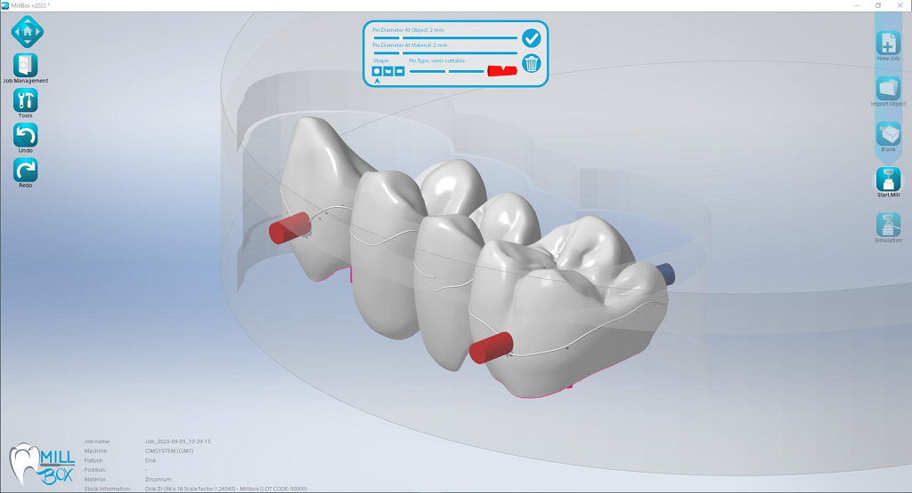
Fresado inteligente para clínicas y laboratorios medianos. Nesting automático con IA, simulación anti-colisiones en tiempo real y gestión de materiales integrada.
Solicitar Cotización →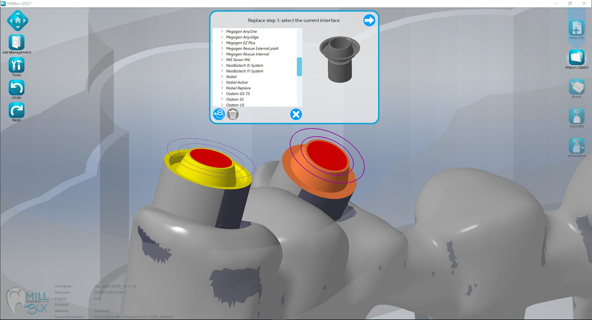
Potencia industrial para centros de fresado. Mecanizado de implantes complejo, reemplazo automático de interfaces, compatibilidad con más de 200 fresadoras del mercado.
Solicitar Cotización →Encuentra la versión ideal para tu flujo de trabajo.
| Funcionalidad | MillBox Eco | MillBox Expert |
|---|---|---|
| Ejes de Mecanizado | 3+2 (Posicionamiento) | 5 Simultáneos |
| Soporte para Implantes | Básico (Add-on) | Nativo (Advanced Module) |
| Materiales Duros (CoCr, Ti) | Limitado | Soporte Completo |
| Mecanizado a 90° | Opcional | Incluido (Comfort Module) |
| Edición de Estrategias | Bloqueado | Acceso Total al Editor |
| Canales de Tornillo Angulados | No | Sí (Manual y Auto) |
| Análisis Térmico de Grosor | Básico | Avanzado (Heat Map) |
Expande las capacidades de tu CAM con soluciones específicas.
Flujo automatizado para prótesis totales, reduciendo el tiempo de diseño y fresado significativamente.
Crea modelos físicos con muñones desmontables a partir de escaneos intraorales con precisión suiza.
Especializado en férulas de descarga, protectores bucales y guías quirúrgicas con ajuste perfecto.
Precisión industrial con Asiga y Phrozen.
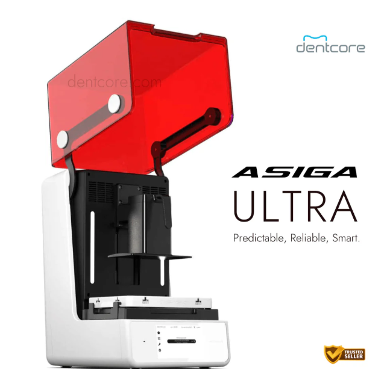
La cima de la impresión 3D dental. Resolución 4K y precisión micrométrica constante mediante tecnología SPS. Su sistema de material abierto permite el uso de más de 500 resinas validadas, ofreciendo una versatilidad sin precedentes.
Solicitar Cotización →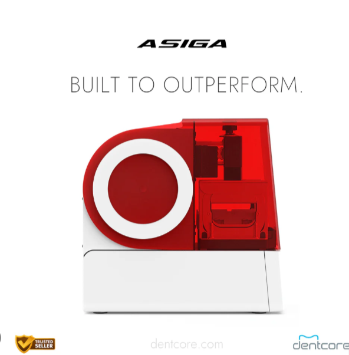
El estándar de confianza en laboratorios digitales de todo el mundo. Su tecnología de posicionamiento inteligente garantiza que cada capa se imprima con una exactitud absoluta, reduciendo el desperdicio de resina y el tiempo de post-procesado.
Solicitar Cotización →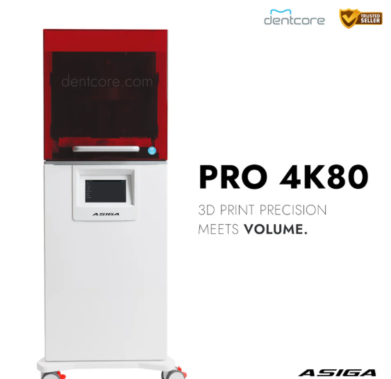
Diseñada para producción a gran escala sin comprometer la resolución ni la precisión.
Solicitar Cotización →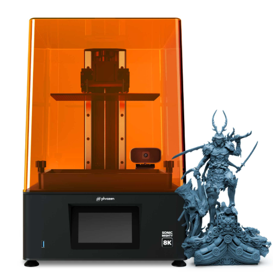
Impresión LCD de ultra alta definición. Ideal para laboratorios que buscan escalar la producción de modelos sin sacrificar detalles milimétricos, a un costo accesible.
Solicitar Cotización →Zirconio, cerámicas y maquillaje de Aidite y MiYO para restauraciones naturales.
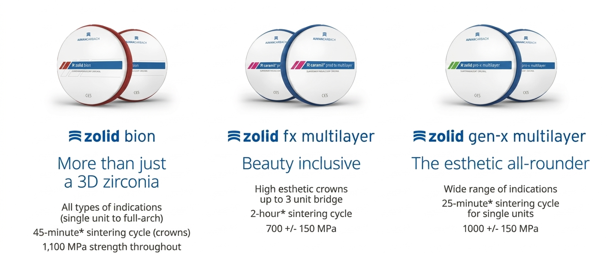
Zirconio de última generación de Amann Girrbach para restauraciones definitivas.
Solicitar Cotización →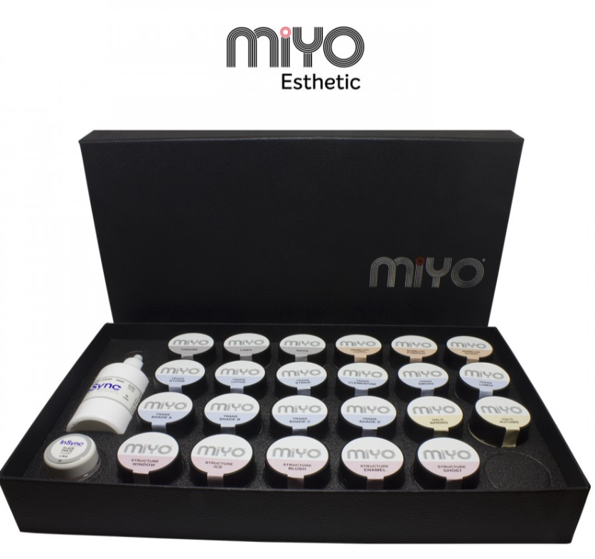
Sistema de maquillaje y texturización para dar vida a tus restauraciones.
Solicitar Cotización →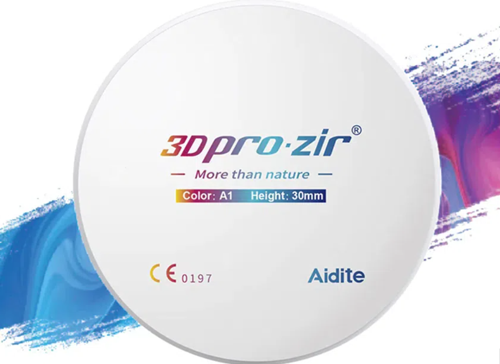
Zirconio multicapa de alta gama con gradiente de color y translucidez natural para restauraciones estéticas definitivas.
Solicitar Cotización →La integración total es la clave del éxito en la odontología digital moderna.
Contamos con ingenieros certificados para asegurar que tu flujo de trabajo nunca se detenga. Soporte remoto y presencial inmediato.
No solo vendemos equipo; te enseñamos a dominarlo. Acceso exclusivo a webinars, cursos y protocolos clínicos validados.
Todos nuestros productos están validados para trabajar entre sí, eliminando errores de compatibilidad y maximizando tu inversión.